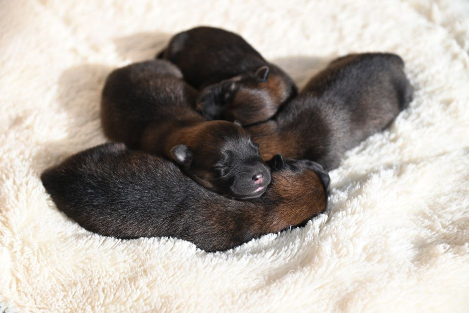

Les techniques de toilette pour entretenir la beauté de votre animal de compagnie

Photo: Goochie Poochie Grooming / Pexels
Comment entretenir la beauté de votre animal de compagnie : Des techniques de toilette efficaces
En tant que nouveau propriétaire d'un animal de compagnie, vous vous demandez sans doute comment entretenir l'apparence et la santé de votre ami à quatre pattes. La toilette régulière est un élément clé pour maintenir la propreté de votre animal, prévenir les maladies cutanées et la perte de poils, et renforcer l'attachement avec lui. Voici quelques conseils pratiques pour entretenir la beauté de votre animal de compagnie.
Les bases du brossage

Photo: JacLou- DL / Pexels
Les chiens, les chats et les autres petits animaux ont des besoins de toilette différents, mais une chose est commune : le brossage régulier. Pour les chiens, brossez-les 2 à 3 fois par semaine, et plus si nécessaire, comme pour les chiens à poil long. Par exemple, un Border Collie a besoin d'être brossé tous les jours pour prévenir la formation de boulettes de poils.
Scénario : Votre chien est un Golden Retriever, et il est en fin d'été. Les températures sont plus élevées, et il perd beaucoup de poils. Au lieu de le brosser une fois par semaine, il est préférable de passer du temps à le brosser chaque jour. Utilisez un peigne à dents longues et un peigne à dents courtes pour éliminer les poils morts et les parasites.
Lavage et shampooing
Le lavage est un aspect important de la toilette d'un animal, mais il est crucial de ne pas le faire trop souvent. En général, un lavage tous les 3 à 4 mois est suffisant pour la plupart des chiens, sauf s'ils ont été mouillés accidentellement ou s'ils sont particulièrement sales.
Conseil : Utilisez toujours un shampooing adapté à l'espèce de votre animal. Par exemple, les chiens ont besoin d'un shampooing pour chiens, qui ne contient pas de paraben ou de parfum. De plus, utilisez une quantité de shampooing de la taille d'une pièce de 10 centimes pour 10 kg de chien.
Trimmer les griffes
Les griffes de votre animal de compagnie doivent être tranchées régulièrement pour éviter les infections et les traumatismes. Les chiens et les chats ont environ 24 griffes à trancher tous les 6 à 8 semaines. Utilisez des ciseaux ou une tronçonneuse de griffes adaptée à l'espèce.
Exemple : Votre chat a des griffes longues qui peuvent causer des blessures. Tranchez ses griffes tous les 3 semaines avec une tronçonneuse de griffes. Si vous vous sentez mal à l'aise, consultez un vétérinaire pour lui apprendre le bon geste.
Les dents et la santé buccale
La santé buccale de votre animal de compagnie est essentielle à sa santé globale. En plus de l'hygiène dentaire, la gestion des tartines et des calculs dentaires est cruciale. Nettoyez régulièrement la bouche de votre animal avec un goupillon pour chiens ou un bâtonnet nettoyant.
Conseil : Utilisez un dentifrice pour chiens ou chats, qui est adapté à l'espèce de votre animal. Le nettoyage des dents doit être effectué 2 à 3 fois par semaine, en utilisant le goupillon pendant 2 à 3 minutes.
Le toilettage professionnel
Certains animaux, comme les chiens à poil long, nécessitent un toilettage professionnel plus fréquent. Le toilettage professionnel peut être effectué toutes les 4 à 6 semaines, selon la longueur du poil et l'espèce de votre animal.
Exemple : Votre chien est un Schnauzer, qui a besoin d'être toiletté tous les 4 à 6 semaines. En plus de la routine de toilettage, assurez-vous de maintenir sa queue et sa queue bien formées. Les professionnels peuvent également préparer les poils de sa tête et de ses épaules pour éviter que ceux-ci ne se chevauchent.
La toilette des petits animaux
Les petits animaux, comme les lapins, hamsters, et rats, nécessitent également une attention particulière à la toilette. Brosser ces petits animaux tous les jours peut aider à prévenir la formation de boulettes de poils et à maintenir leur pelage propre. Pour les hamsters, utilisez un peigne à dents longues pour éliminer les poils morts.
Conseil : Utilisez toujours des outils adaptés aux petits animaux. Les peignes pour hamsters sont spécialement conçus pour ne pas abîmer leur peau sensible. Lorsque vous brosser un hamster, prenez le temps de le caresser pour lui montrer que vous faites confiance.
En conclusion, l'entretien de votre animal de compagnie est essentiel pour son bien-être. En suivant ces conseils pratiques, vous pouvez maintenir la beauté de votre animal tout en promouvant sa santé. N'oubliez pas que chaque animal a ses propres besoins, donc adaptez ces conseils aux besoins de votre animal.
Produits recommandés
En tant que Partenaire Amazon, je réalise un bénéfice sur les achats remplissant les conditions requises.